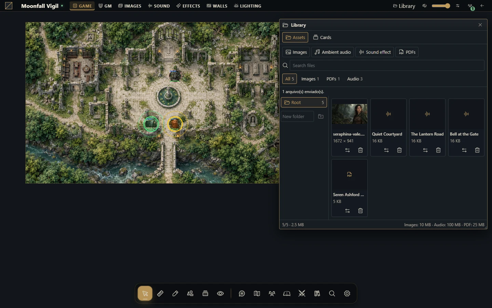
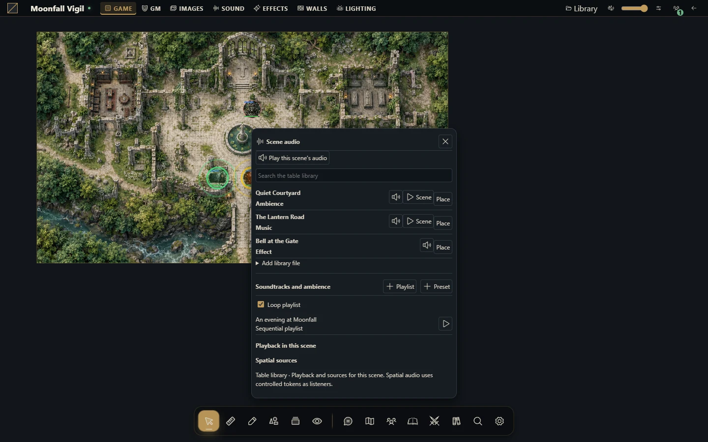

Música, ambiente e áudio posicional
Prepare faixas e playlists reutilizáveis e confira o que os jogadores realmente ouvem.


Prepare seu áudio
O mestre gerencia faixas, playlists e reprodução nas cenas. Faixas podem ser música, ambiente ou efeito. Envie somente áudio que você possa usar, escolha nomes claros e teste a reprodução de cada arquivo no navegador. Faixas de efeito são pontuais, em vez de música em loop.
Monte a paisagem sonora
Envie e classifique suas faixas no painel de áudio.
Ajuste volume e repetição de cada faixa.
Crie uma playlist, selecione faixas e escolha reprodução sequencial, aleatória ou repetida conforme a necessidade.
Abra a cena pretendida e inicie sua reprodução. Use pausar, parar, buscar posição e volume quando necessário.
Peça que um jogador interaja com a página e confirme o áudio antes da sessão.
Playlists aceitam até 200 faixas. Presets de paisagem sonora são coleções reutilizáveis; um arquivo enviado não toca automaticamente em todas as cenas.
Adicione som posicional
Coloque uma fonte sonora na cena e configure raio, ganho, queda de volume e oclusão. Teste a partir da posição de um token controlado. Paredes e barreiras sonoras podem afetar atenuação; o contexto de escuta do mestre pode diferir do jogador. Objetos Inteligentes podem tocar um som da campanha ou controlar um som que já está tocando na cena.
Solucione silêncio ou reprodução diferente
Navegadores frequentemente exigem clique ou interação antes do áudio. Confira silenciamento do site/aba, saída do sistema, volume, cena e estado da reprodução. No som posicional, confira fonte habilitada, raio, posição do token e oclusão. Reconecte para atualizar a reprodução sincronizada após uma interrupção.
Excluir uma faixa da campanha pode desfazer referências em playlists, fontes posicionais e blueprints. Pare a reprodução e confira a reutilização antes de excluir. Remover o arquivo difere de remover uma fonte de uma cena; preserve os originais no backup de conteúdo.
Mais capturas deste guia (1)

